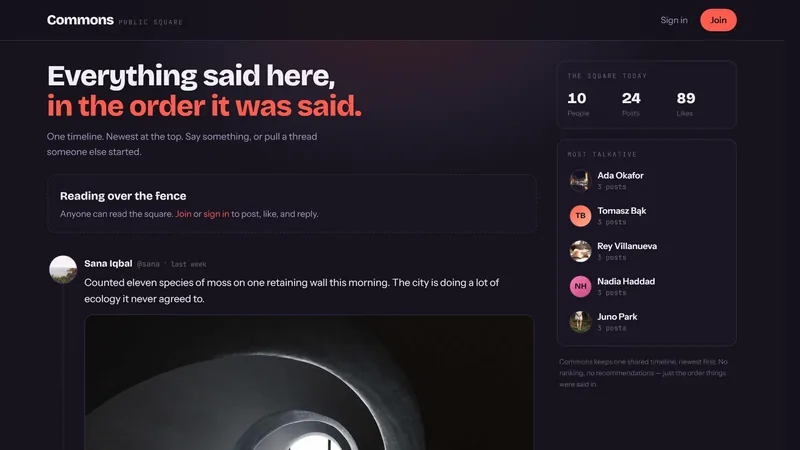
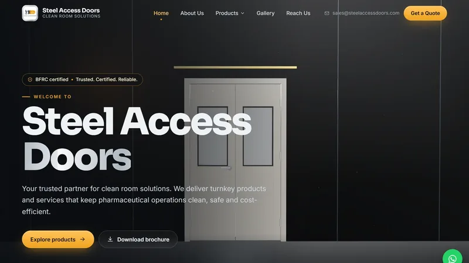
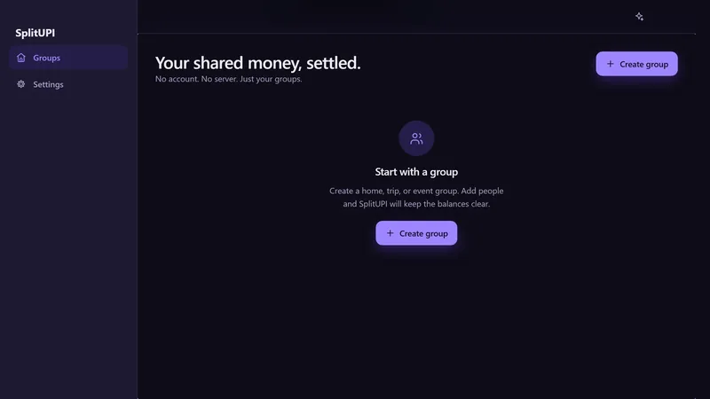
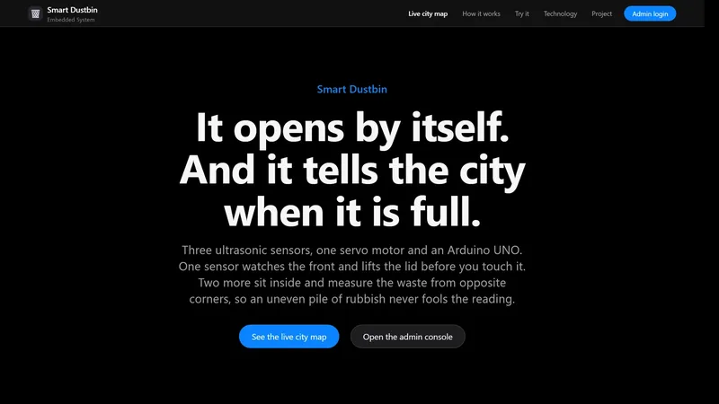
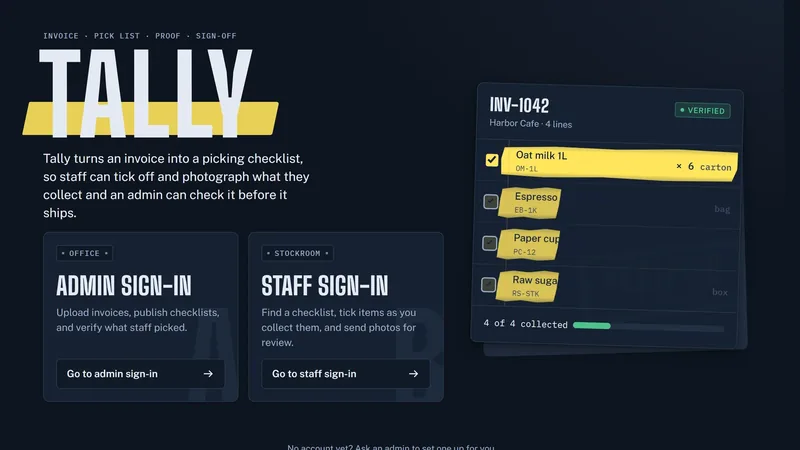
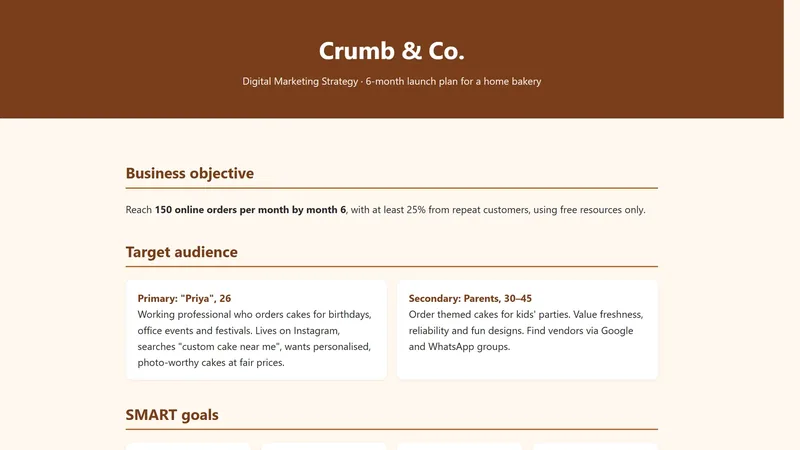

LiveWeb
Commons
A social platform on one shared, newest-first timeline. Posts, likes, comments, follows.
Open live
Details
Open to roles · Hyderabad, India
I build websites apps things that run on the web, the phone and a microcontroller.
Full-stack & AI engineer with an embedded background. Next.js, FastAPI and Postgres on the web, Kotlin on the phone, C++ on the microcontroller, and the machine learning that decides things in between.
the live stuff ↓
Deployed and clickable. Tap a card for how it works, or open it live.

LiveWeb
A social platform on one shared, newest-first timeline. Posts, likes, comments, follows.
Smart India Hackathon · SIH25031
Photograph a civic problem; a vision model classifies it, routes it to the department that owns it, and checks the repair photos before it can be closed.
Web · Security
Real-time chat with friends, end-to-end encrypted private conversations, and voice and video calls.

LiveClient work
A redesigned website for Steel Access Doors, a clean-room solutions company in Hyderabad, with a 3D model of every product.
Security · Web
An authentication service built around refresh-token theft rather than the usual hash-and-issue demo.

LiveWeb
Splits group bills, then works out the fewest UPI transfers that clear everyone.

LiveA Greenve project
Touchless ESP32 bin with a fleet dashboard, plus an in-browser twin of the firmware.

LiveWeb
Turns a supplier invoice into a picking checklist that staff tick off and photograph, and an admin signs off.

LiveA six-month digital marketing strategy for a fictional home bakery launching online, built with free tools only.
more things I built
Each one runs on simulated data on an ordinary laptop, with no GPU, and turns a model’s output into a decision someone would act on. The figures are from each project’s own evaluation.
A complete self-driving robot stack in a 2D simulator: it sees, tracks, maps, plans a route and drives it, with a safety layer that can stop it.
OpenCV perception and object tracking feed an occupancy map built from LiDAR and camera. A* or Dijkstra plans the route, and pure-pursuit control follows it.
Three planners on eleven maps reached the goal every time without a collision. A* found the same optimal path as Dijkstra while expanding 56% fewer nodes, and replans in about 19 ms.
Forecasts a city zone’s hourly electricity demand a week ahead, then turns it into peak alerts and load-shifting plans.
An R² of 0.95, with error 53% lower than a naive baseline forecast.
The forecast drives simulated procurement and load shifting, so the result is reported as money saved rather than only as model error.
Predicts which machine will fail and why, from temperature, speed, torque and tool-wear sensors on simulated milling machines.
The simulated data follows the structure of the UCI AI4I 2020 predictive-maintenance dataset, and the real dataset can be dropped in.
A virtual machine streams readings, and the model raises a maintenance alert before it breaks down.
A machine-learning intrusion detector for simulated network traffic, covering denial of service, port scans, brute force and data exfiltration.
A Random Forest catches attack types it was trained on, while an Isolation Forest learns what normal traffic looks like and flags anything new.
Detections become security alerts mapped to MITRE ATT&CK techniques, and the whole pipeline runs in under a minute.
End-to-end pipelines: messy data in, cleaned, tested statistically, and out as a Streamlit dashboard and a written set of findings.
35 years of climate data for four Indian cities, tested for trends and forecast forward.
Mann-Kendall tests find warming in all four cities, at 0.18 to 0.32 °C per decade, with Delhi fastest.
Z-score and Isolation Forest detection found 98% of injected heatwaves, and SARIMA forecasts the years ahead.
Forecasts daily demand, then turns it into reorder points, safety stock and purchase orders.
Models are judged on a 56-day recursive backtest against a seasonal baseline, on data that includes festivals, promotions and supplier delays.
In simulation, the new reorder policy cut stockout days from 6.7% to 2.2%.
Predicts whether an employee will be a low, medium or high performer, and suggests an HR action for each.
Trained on 2,000 synthetic employees and scored on 400 it had never seen, with an F1 of 0.76.
Employees in the top quarter for training hours were predicted high performers 49% of the time, against 14% for the bottom quarter.
Turns raw poll and survey responses into vote shares, regional breakdowns and trends.
Every share comes with a 95% margin of error, and the gap between leader and runner-up is tested for significance.
A dashboard filters by region, age, gender and date, and accepts your own CSV.
Analyses a year of spending: category share, budget against actual, savings rate and unusual transactions.
Bank data is private, so a seeded simulator reproduces real habits like rent, festive spending and weekend patterns, plus deliberate data-quality problems to clean.
Cleans and prepares the UCI Adult census dataset, and measures what each preprocessing choice actually changes.
Fitting a target encoding before the train/test split inflated the test score by 0.026. Doing it after the split removes that false gain.
ScamShield runs on a phone. The other five are dashboards that run on synthetic data or your own answers, and none of them scans, scrapes or contacts anything real. None is hosted, so here is what each one does.
Screens incoming SMS and chat notifications for Indian scam patterns entirely on the phone, and explains each warning in English or Hindi.
The manifest strips INTERNET with a merger directive, so permissions that bundled libraries add are removed. Nothing about a message can leave the device.
Nineteen weighted rules built from forty-four regexes across English, romanised Hinglish and Devanagari. One is negation-aware, so “never share this OTP” stays quiet.
Nine character substitutions are applied before matching a host against twenty-five real brand domains; UPI IDs are checked against a fifty-seven entry allowlist of genuine PSP handles.
An optional on-device language model rewrites the warning in plain words and can raise a verdict, never lower one. The rules stay in charge.
Paste an email and it scores how likely it is to be phishing, then lists exactly why.
A rule engine flags credential requests, urgency, lookalike senders and suspicious links, and an optional model adds a probability. The final score blends them 60/40, so the rules still drive it.
The analyser makes no network requests at all, and URLs are shown defanged, like hxxp://198[.]51…, so nothing on screen is clickable.
Scores a password the way attackers actually guess, and says what to change.
There is no password column anywhere, not even a hash, because people type real passwords into checkers. Only the score and length are kept, and a test proves the column does not exist.
It shows the textbook length × log₂(alphabet) figure beside a pattern-adjusted one, so you can see why Password123! scores high on the formula and falls to a guess list.
A questionnaire about your own settings and habits that scores how exposed you are across ten areas.
It asks whether your phone number is public, never what the number is. It does not scrape or track anyone.
A what-if simulator re-scores you with improved settings, so you can see how much each change would lower the risk before you make it.
Validates, enriches, scores and correlates threat indicators, and teaches people to recognise the same threats.
How dangerous an indicator is and how sure we are of it get different scores, with sources graded A to F for reliability. A match is not reported as a confirmed breach.
Observed behaviours map to named MITRE ATT&CK techniques, and indicators are only checked for syntax: none is ever visited, resolved or contacted.
A simulated intrusion detection system: it generates synthetic traffic, detects attacks in it, and gives a security analyst a dashboard of scored, grouped incidents. It never captures real packets.
Signature rules catch known patterns, a statistical model flags traffic that drifts from a learned baseline, and an optional Random Forest adds a third opinion. All three feed one risk score.
Alerts about the same activity within a time window are merged into one incident, and the dashboard reports how much that cut the alert count.
Each is a FastAPI API with a React front end, tested in CI, and its database moves from SQLite to managed Postgres by changing one environment variable. The three that store files do the same from a local folder to an S3-compatible bucket. None is hosted, so here is what each one does differently.
Event planning with live RSVPs. Organisers publish; attendees answer going, maybe or not going, and every open dashboard updates without a refresh.
A seat is taken with one conditional UPDATE that only succeeds while the going count is below capacity. The loser of a race changes no rows and joins the waitlist, and a CHECK constraint enforces the same rule inside the database.
The suite releases thirty users on a thread barrier at the same instant, against PostgreSQL in CI, and asserts that exactly the capacity get in.
Virtual sensors, or an optional ESP32, report soil moisture, temperature, humidity and light. The cloud decides when to water and sends the pump command back to the device.
The engine stops the pump at a maximum run time to prevent overwatering and enforces a cooldown between waterings, with thresholds set per plant profile.
A simulator stands in for the sensors and pump, and real ESP32 firmware sits in the same repository. A device that stops reporting is marked offline and raises an alert.
Teachers publish assignments, students upload their work, and teachers return marks and written feedback.
Submissions go to a private bucket and are only reached through signed links that expire after five minutes.
Lateness is stamped at submission time and kept after grading, so the timestamp is not something to argue about. The same app also runs on AWS Lambda through Mangum.
Log practice across hobbies, set goals, and share progress on a community feed with likes, comments and follows.
Files are validated by their first bytes rather than their extension, and served through signed links that expire.
Likes, reports and new posts carry database uniqueness constraints, so a repeated request cannot create a second row.
Builds a personal meal plan from a user’s profile and stores the plans and files in the cloud. Plans are general-wellness examples, not medical advice.
A rule-based engine that needs no internet, API key or GPU generates plans on its own and takes over whenever the optional language model is unavailable. Each plan records which one produced it and why it fell back.
The 297 backend tests run on Python 3.11 and 3.13 against SQLite, and again against PostgreSQL, at 97% coverage, alongside 31 front-end tests, an end-to-end smoke run, and the full stack started from its Docker image.
You cannot attach a debugger to a bin on a street corner, so I learned to write the deciding part separately and prove it on a laptop first. That habit is why the web projects above have test suites.
AES-256-GCM with PBKDF2, a fresh salt and IV per file, and a versioned header authenticated as additional data so it cannot be silently altered.
Two relay channels, temperature and humidity, and motion detection; relay state resyncs to the app on reconnect.
Register and log in for a token, then carry it on protected routes via an auth header.
Date-range availability search that rejects overlapping bookings, with billing on decimals rather than floats.
Multi-client console chat on raw sockets: public messages, private messages, nickname management.
Two dependency-free task managers with local persistence, JSON import and export, keyboard shortcuts and labelled controls.
Coursework and practice notebooks from machine learning training.
Data science internship tasks: iris classification, email spam detection with TF-IDF and Naive Bayes, and sales prediction.
A trained classifier saved, then served as a Flask web app that takes inputs and returns predictions.
Three Indian D2C skincare brands compared: Minimalist, The Derma Co and Plum.
A buyer persona for FitBowl, a meal subscription.
A basic funnel for StudyNest, an AI study planner for college students.
SEO-friendly homepage content for GreenNest Home.
Basic keyword research for PureGlow Organic Skincare.
Optimised title tags, meta descriptions and target keywords for five pages.
A webpage’s headings redesigned into a clear H1, H2 and H3 hierarchy.
An on-page audit of this portfolio: 15 issues found and prioritised. Its fixes are applied to this page.
Google first-page results analysed for five keywords, each a different search intent.
A keyword-led blog plan for BrewNest Coffee.
An optimisation plan for a local business listing.
A 30-day content calendar for The Quiet Cup, a café.
Five post designs for Brew Haven Café.
Researched hashtag categories for Horizon Digital.
Ten captions, each mapped to an objective, an audience and a call to action.
A three-email launch campaign for StudyNest.
A mobile-friendly newsletter for Stack Notes, built in HTML.
A conversion-focused landing page for Ledgerly, a concept GST invoicing app.
A free three-day gym trial campaign, with a lead tracker.
A basic Meta Ads campaign for FitNest Studio, with three ad creatives.
where I’ve worked
Four internships across full-stack development, machine learning, data analysis and digital marketing, alongside a B.Tech at Malla Reddy College of Engineering & Technology.
Oct 2026 – PresentRemote · Hyderabad
Veda Technology
Daily tasks across the Digital Marketing track: competitor analysis, buyer personas, SEO, social media, email, landing pages, lead generation and Meta Ads, each published as its own repository.
Sep 2026 – PresentRemote · Hyderabad
Yuva Intern by Henry Harvin
Supervised machine learning: regression and classification with Linear and Logistic Regression, Decision Trees, Random Forest and KNN, compared on a held-out test set and 5-fold cross-validation.
Sep 2026 – Oct 2026Remote · Hyderabad
B.Y.T.E by Arithmatrix Tech
A full-stack development internship, completed with a verifiable certificate.
the paperwork
Each links to the issuer’s own verification page where one exists.
Be10x · Sep 2026
MongoDB · Sep 2026
B.Y.T.E by Arithmatrix Tech · Sep 2026
Microsoft Learn · Sep 2026
Tata · Forage · Sep 2026
PNC · Forage · Sep 2026
eDC IIT Delhi · Sep 2026
Cisco Networking Academy · Aug 2026
Google Cloud Skills Boost · Oct 2025
eDC IIT Delhi
my toolbox
Not what I’ve read about.
a bit about me
I started on microcontrollers, where you cannot attach a debugger to a bin on a street corner. So I learned to write the deciding part on its own and prove it before it ships.
That is the thread through everything here. The settlement solver in SplitUPI is checked against a brute-force search. The token-rotation logic in Credential is driven through a real replay attack in its tests. The bin’s firmware has an in-browser twin so the same assertions run without the hardware.
Moving to the web did not change the habit, it just changed the language. I am looking for full-stack or backend work, and I am equally happy on the side of a product that talks to hardware.
I’m also building Greenve, a startup idea, with Reddi Malli Nandini and Rohit Singh. The Smart Dustbin comes under it: a bin that opens without being touched and tells the city when it needs emptying.
the other half
Alongside the engineering, I work through the Digital Marketing track of the Veda Technology internship: strategy, SEO, social media, email and paid campaigns, each for a set business brief. The businesses are fictional, apart from the real brands in the competitor analysis and the audit of this site.
Featured strategy
A six-month digital marketing strategy for a fictional home bakery launching online, built with free tools only.
150 online orders a month within six months, a quarter of them from repeat customers, before any platform is chosen.
Instagram, Google Business Profile and WhatsApp Business, each chosen for how the audience finds and buys. Paid ads are left out because the brief allows only free resources.
Each goal maps to KPIs with a target, a tracking tool and a review schedule, kept in a shared tracker.
Three Indian D2C skincare brands compared: Minimalist, The Derma Co and Plum.
RepoA buyer persona for FitBowl, a meal subscription.
RepoA basic funnel for StudyNest, an AI study planner for college students.
RepoSEO-friendly homepage content for GreenNest Home.
RepoBasic keyword research for PureGlow Organic Skincare.
RepoOptimised title tags, meta descriptions and target keywords for five pages.
RepoA webpage’s headings redesigned into a clear H1, H2 and H3 hierarchy.
RepoAn on-page audit of this portfolio: 15 issues found and prioritised. Its fixes are applied to this page.
RepoGoogle first-page results analysed for five keywords, each a different search intent.
RepoA keyword-led blog plan for BrewNest Coffee.
RepoAn optimisation plan for a local business listing.
RepoA 30-day content calendar for The Quiet Cup, a café.
RepoFive post designs for Brew Haven Café.
RepoResearched hashtag categories for Horizon Digital.
RepoTen captions, each mapped to an objective, an audience and a call to action.
RepoA three-email launch campaign for StudyNest.
RepoA mobile-friendly newsletter for Stack Notes, built in HTML.
RepoA conversion-focused landing page for Ledgerly, a concept GST invoicing app.
RepoA free three-day gym trial campaign, with a lead tracker.
RepoA basic Meta Ads campaign for FitNest Studio, with three ad creatives.
Reposay hello
Open to full-stack, backend, AI/ML and embedded roles, and to internships.